One of the main criteria of a successful adventure is equipment. If you are not armed against the hords of orcs, protected against evil (and potentially many heavy weapons), you will not last a day in Middle-earth. Look in Minas Tirith inventory to find artifacts that will help you and your fellowship's endeavours.
| Name | Other name | Description | |
|---|---|---|---|
| 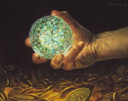 | Arkenstone |
the Heart of the Mountain |
Gem treasured by the Dwarves of the Lonely Mountain. The Arkenstone was a great white stone. Thorin Oakenshield described is as "like a globe with a thousand facets; it shone like silver in the firelight, like water in the sun, like snow under the stars, like rain upon the Moon!" (Hobbit, p. 243) Thrain I had found it at the roots of the Lonely Mountain. The Dwarves cut and fashioned the gem, which reflected light in many sparkling colors and glowed with its own inner light. |
| 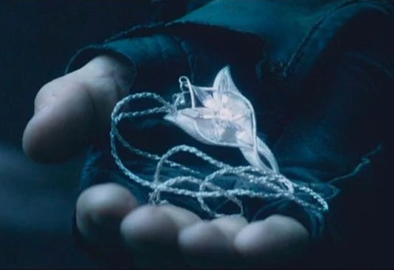 | Elessar |
Elfstone |
Green jewel with healing properties. The Elessar glowed with the light of the Sun caught within the green stone, like sunlight shining through leaves. At some point, the jewel was set in a silver brooch shaped like an eagle. Things that were withered or damaged appeared rejuvenated and restored when viewed through the Elessar. It was said that a person in possession of the Elessar could heal the hurts of others. |
| 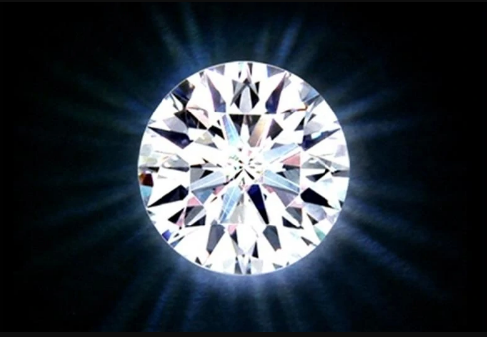 | Elendilmir |
Star of Elendil Star of the North Star of the North Kingdom |
Token of royalty of the North-kingdom of Arnor. The Elendilmir was a white star-shaped gem on a silver fillet worn on the brow of the King. The gem was Elvish crystal and the silver band was mithril. |
| 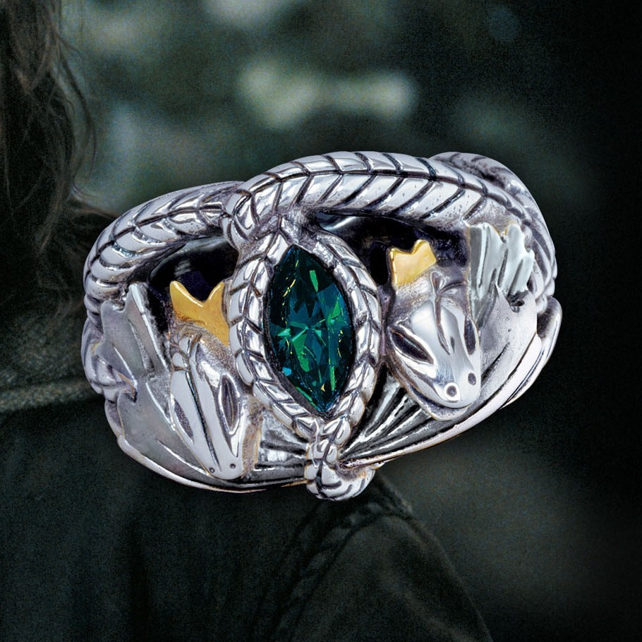 | Ring of Barahir |
- |
Heirloom of the House of Isildur and a symbol of friendship between Elves and Men. The Ring of Barahir had no special powers but it was valued for its heritage. It was made by the Noldor in the Undying Lands. For this ring was like to twin serpents, whose eyes were emeralds, and their heads met beneath a crown of golden flowers, that the one upheld and the other devoured; that was the badge of Finarfin and his house. |
| 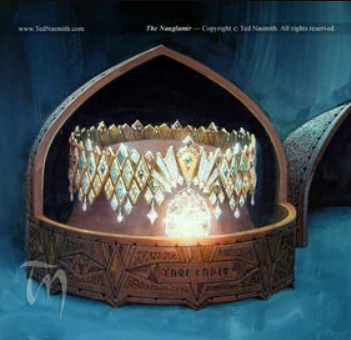 | Nauglamír |
Necklace of the Dwarves |
The Necklace of the Dwarves. The Nauglamir was made of gold and was set with numerous jewels from Valinor. It was described as a carcanet which is an ornamental collar or necklace. One of the Silmarils was later added to the Nauglamir. The Nauglamir "had a power within it so that it rested lightly on its wearer as a strand of flax, and whatsoever neck it clasped it sat always with grace and loveliness." |
| 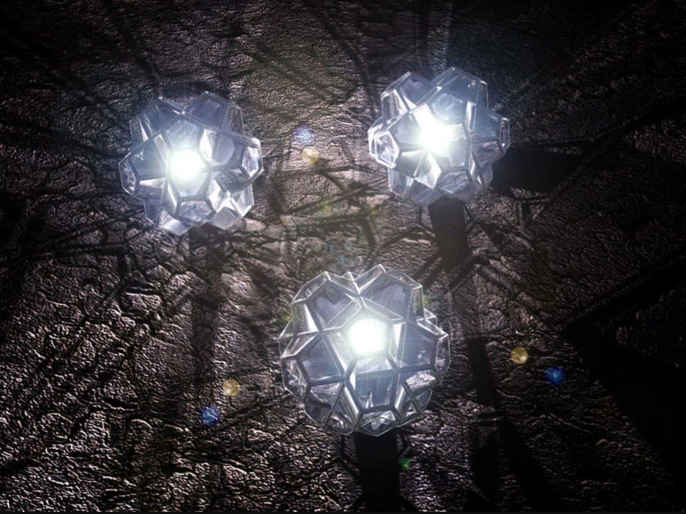 | The Silmarils |
- |
The Silmarils are not mere jewels which shine with a great light. The three Silmarils are in some sense both alive and sacred. How Fëanor, admittedly the greatest of the Noldor, was able to create these objects is not fully explained. Even the Valar, including Aulë, the master in handskills indeed, could not copy them. In fact, even Fëanor may not have been able to copy them as part of his essence went into their making. Their worth, in Tolkien's universe, was close to infinite, even to the Valar, as they were unique and irreplaceable. The Silmarils themselves are said to produce their own light, which comes from the Two Trees, but also to reflect the light of any other lights that come near them. |
| Name | Other name | Description | |
|---|---|---|---|
| 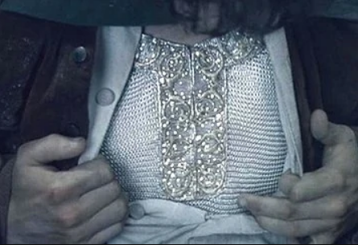 | Mithril |
true-silver silver-steel Moria-silver |
Rare precious metal. Mithril was a strong and beautiful metal. It resembled silver but it never tarnished. Mithril was stronger than tempered steel, but it was very light. It was malleable and could be shaped to make many things. Its value was once ten times that of gold, but it became even more valuable as it became rarer. |
| 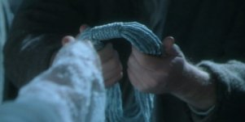 | Hithlain |
- |
Material used by the Elves for making rope. Hithlain was grey and it had a silken texture. Ropes made of hithlain were very strong yet slender and light. In the darkness, the rope appeared to glow with a silvery sheen. |
| Name | Other name | Description | |
|---|---|---|---|
| 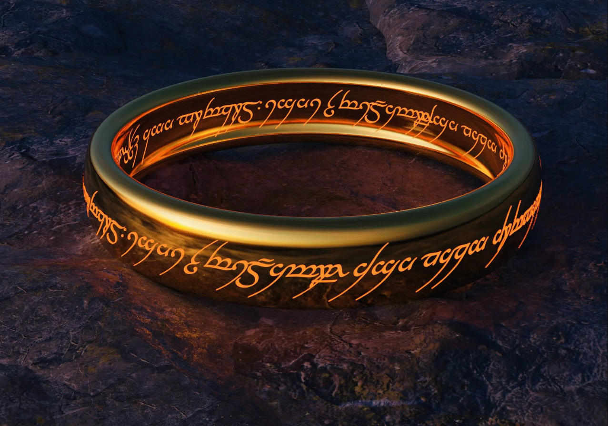 | The One Ring |
Precious the Ring The Master-ring the Ruling Ring The Great Ring The Ring of Doom |
The One Ring was the greatest of the Rings of Power. Sauron created it to rule the others, and in order to do so he invested the One Ring with much of his strength and will. Thus the One Ring was a source of great power for Sauron, but it was also his greatest weakness. For when the Ring was destroyed in the fires of Mount Doom, Sauron too was destroyed. The One Ring was a gold band with no jewels. The size of the Ring changed in order to fit its wearer. The Ring appeared to be completely plain with no markings, but when it was heated with fire an inscription was revealed on the outside and inside. The script was Elvish because fine lettering was required, but the language was the Black Speech. It read: Ash nazg durbatulûk, ash nazg gimbatul - Ash nazg thrakatulûk agh burzum-ishi krimpatul.. It means "One Ring to rule them all, One Ring to find them, One Ring to bring them all and in the darkness bind them." |
| 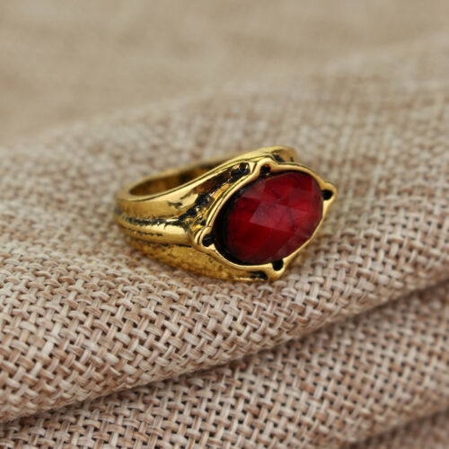 | Narya |
Narya rhe Great the Red Ring the Third Ring |
The Ring of Fire. Narya was set with a red stone. At the time of the War of the Ring, Gandalf was the bearer of Narya. Gandalf bore Narya in secret, but Saruman became aware of Cirdan's gift and he grew resentful of Gandalf. Gandalf's spirit was enhanced by Narya, and he countered the destructive fire of Sauron with a kindling fire of hope. At the end of the War of the Ring, Gandalf returned to the Grey Havens openly wearing Narya. He bore the Ring with him when he sailed into the West with Elrond and Galadriel, the bearers of Vilya and Nenya. |
| 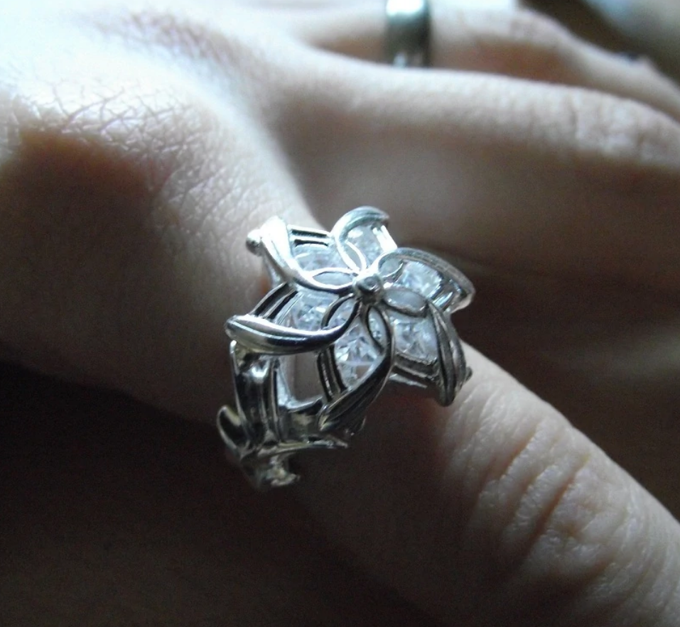 | Nenya |
The Ring of Water. | Nenya was set with a white diamond and its band was made of mithril. Galadriel was the bearer of Nenya. Galadriel received Nenya from Celebrimbor when the Three Rings were first hidden in 1693 of the Second Age. She used Nenya to preserve the beauty of the Golden Wood of Lothlorien, making it seem like "a timeless land that did not fade or change or fall into forgetfulness." |
| 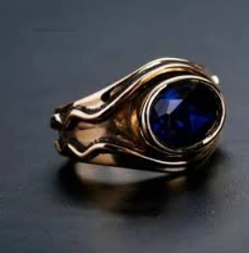 | Vilya |
The Ring of Air. the Seven | Vilya was said to be the mightiest of the Three. It had a gold band set with a blue stone. At the time of the War of the Ring, Vilya was borne by Elrond. Vilya was first given to Gil-galad for safekeeping and he passed the Ring on to Elrond. It is not certain when Gil-galad did this. According to "The Tale of Years" Gil-galad did so before he died, though it does not specify how long before his death, which was in 3441 of the Second Age. In "The History of Galadriel and Celeborn" it is said that Gil-galad gave Vilya to Elrond around 1701 of the Second Age, when he appointed Elrond as his vice-regent. |
| 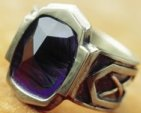 | Seven Rings of the Dwarves |
the Seven Rings | Rings of Power used by Sauron to try to control the Dwarf-lords. The Seven Rings were made by the Elven-smiths of Eregion with Sauron's help. The Elves had been deceived by Sauron, who came to Eregion in a fair disguise claiming to be Annatar, an emissary of the Valar. He instructed the Elves in the forging of the Rings of Power. During the 1500s of the Second Age, the Seven Rings were made. Each of the Seven had a gold band set with a single gemstone. |
| 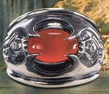 | Nine Rings of Men |
- | Rings of Power used by Sauron to turn nine Men into the Nazgul. The Nine Rings were each set with a gemstone. They were made by Celebrimbor and the Elves of Eregion around 1500 of the Second Age. The Elves made the Rings under the instruction of Sauron, who had come to them in disguise and deceived them about his true identity. Sauron then forged the One Ring to control the other Rings of Power. Because they had been made using skills taught by Sauron, the Nine Rings were subject to the One Ring. |
| Name | Other name | Description | |
|---|---|---|---|
| 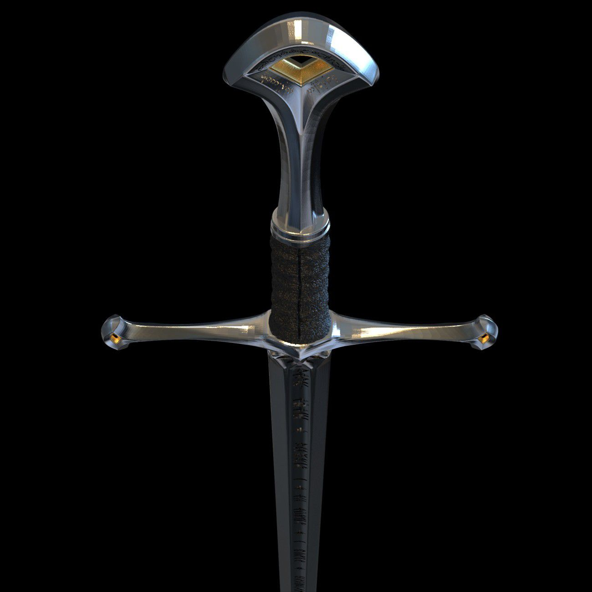 | Andúril |
Blade that was Broken Sword that was Broken Sword of Elendil Flame of the West |
Anduril was the sword of Aragorn. It was forged from the shards of Elendil's sword, Narsil. Nothing is known about the sword's original owner or its early history. Narsil became the sword of Elendil, who escaped the downfall of Numenor and founded the Kingdoms of Gondor and Arnor in Middle-earth. Elendil wielded Narsil during the War of the Last Alliance, and the sword filled Sauron's forces with fear. |
| 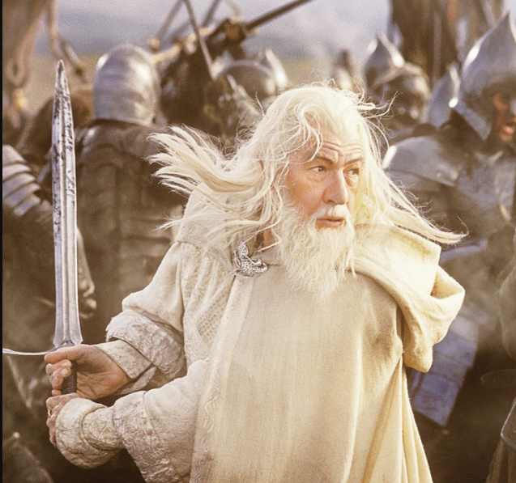 | Glamdring |
the Foe-hammer |
Sword of Gandalf. Glamdring was forged in Gondolin, a great realm of the Elves in the First Age. It once belonged to Turgon, the King of Gondolin. It is not known how Glamdring survived the Fall of Gondolin. |
| 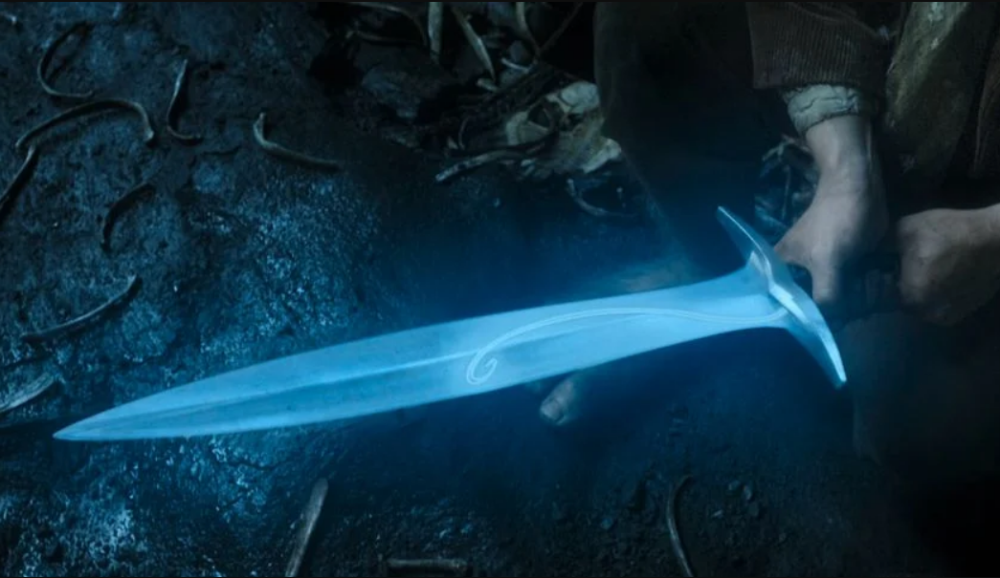 | Sting |
- |
Sword of Bilbo Baggins. Sting was actually a long knife that made the perfect Hobbit-sized sword. Bilbo found it in 2941 of the Third Age in the Troll-hoard of Bert, Tom and William, where the swords Glamdring and Orcrist were also found. These three blades were made by the Elves in Gondolin in the First Age. A special property of the blades was that they glowed with a blue light when Orcs were near. Bilbo used the faint light from the sword to make his way through the tunnels of the Misty Mountains after he was separated from his Dwarf companions. He encountered the creature Gollum and considered using the sword to kill him but decided to spare him out of pity. |
| 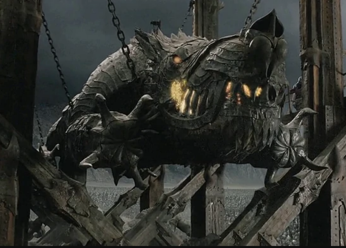 | Grond |
the Hammer of the Underworld |
Weapon of Morgoth. Grond was a great mace known as the Hammer of the Underworld. Morgoth wielded Grond in combat with Fingolfin, the High King of the Noldor, after the Battle of Sudden Flame in 456 of the First Age. Grond made many large pits in the ground as Fingolfin avoided Morgoth's blows. Grond was hung from large engines of war by mighty chains. It was pulled by Great Beasts and wielded by Mountain-trolls. The massive battering ram had been forged in the smithies of Mordor and spells of ruin were laid on it. |
| Name | Other name | Description | |
|---|---|---|---|
| 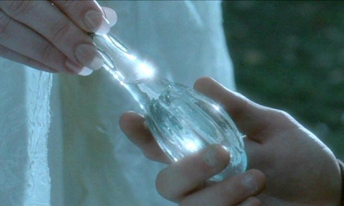 | Phial of Galadriel |
star-glass |
Galadriel's gift to Frodo Baggins. The Phial gave off a brilliant light that struck fear in the hearts of the Enemy's servants. Galadriel gave it to Frodo when he left Lothlorienon February 16, 3019 of the Third Age. |
| 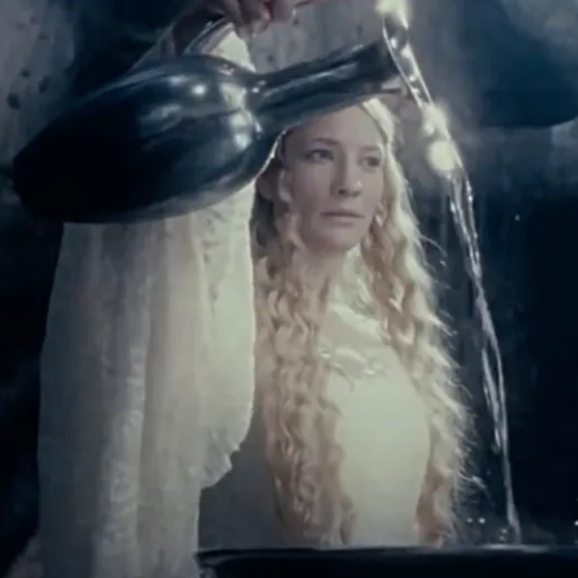 | Miror of Galadriel |
- |
Basin of water used for seeing from afar through space and time. The Mirror of Galadriel was located in a hollow on the southern slopes of the hill in Lothlorien where Caras Galadhon stood. Inside a garden enclosed by a hedge, a flight of steps led down to the hollow. A stream flowed into the hollow from the fountain atop the hill. The Mirror was a wide, shallow, silver basin. It was on a pedestal carved in the shape of a tree. A silver ewer was used to fill the basin with water from the stream. When a person looked into the Mirror they saw images in the water. |
| 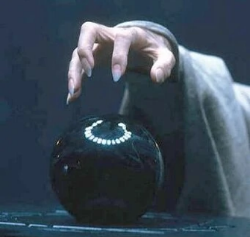 | Palantíri |
the Seeing-stones the Seven Stones the Stones |
The palantiri were Seeing-stones that could be used the gather information and communicate over great distances. Seven stones were brought to Middle-earth and they were used to help govern the far-flung realms of Gondor and Arnor. But over time many of the palantiri were lost and one fell into the hands of Sauron, who used it to spread deceit and despair among those who opposed him. The palantiri were perfectly spherical with smooth, unmarked surfaces. They varied in size: the smallest were about a foot in diameter while the largest were too big to be picked up by one person. The palantiri were deep black in color when not in use and were made of an unbreakable glass or crystal substance. It was believed that they could only be destroyed by intense heat. |